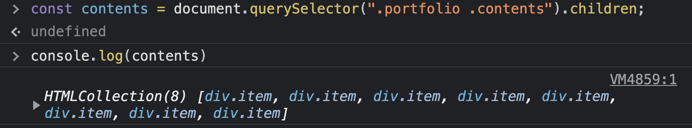
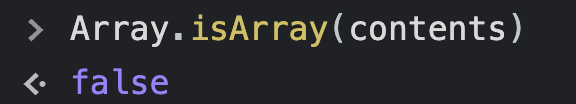
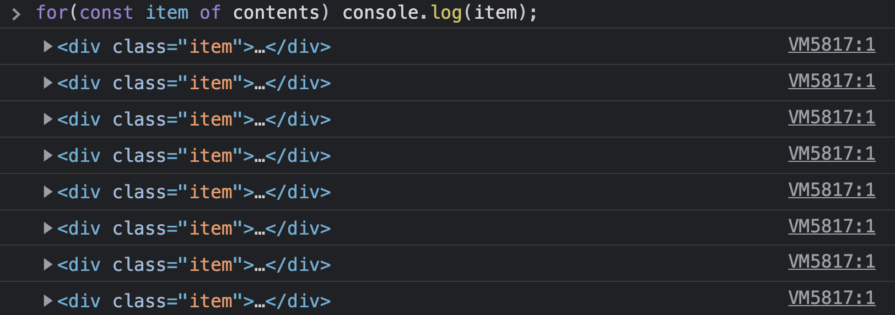

유사배열객체
강사님의 수업을 듣다가 유사객체라는 말씀을 하셨는데 유사객체에는 무엇이 있고 어떻게 사용될 수 있는지 궁금해졌다. 오늘은 유사객체에 대해서 공부를 해보려고 한다.
유사객체는 유사배열, 유사객체, 유사배열객체 등 다양한 이름으로 불리워진다.(이하 내용에서는 유사배열객체라고 설명하려고 한다!)
배열과 유사하게 동작되는 유사배열객체에 대해서 작성하기 전에 먼저 배열에 대해서 간략하게 정리했다.
배열
배열이란 인덱스를 가지고, 자료들을 담는 자료구조이다. 각각의 데이터들은 순차적으로 저장되고 중복이 가능하다.
다양한 자료형의 데이터들을 배열에 넣을 수 있는데 보통 같은 자료형의 데이터를 다루는 경우가 많다.
배열은 다른 자료구조들과는 다른게 인덱스가 존재하는데 인덱스를 사용해서 각각의 자료에 접근할 수 있다.
const arr = ["A", "B", "C", "D", "E"];
console.log(arr[0]); // A
console.log(arr[2]); // C
console.log(arr[4]); // E
배열내 자료의 순서에 따라 인덱스가 정해지게 된다. 인덱스는 0부터 시작해서 배열 내 자료들의 개수 - 1까지로 지정된다.
1. 배열의 사용(선언)
배열을 선언하는데는 두가지 방식이 존재한다.
new키워드와 생성자 함수
new 키워드와 함께 Array생성자 함수를 이용하는 방법이다. 배열의 길이를 기존에 지정해 줄 수 있고, fill 메서드를 사용하면 지정된 길이만큼 초기 데이터를 넣어줄 수 있다.
const arr = new Array(배열의 길이);
// 추가적으로 배열에 데이터에 기본값을 셋팅하는 방법(fill)
const arr = new Array(n).fill(0) // 배열의 길이 n만큼 0으로 채워라
- 리터럴 사용
리터럴을 사용해서 간단하게 배열을 선언할 수 있다.
const arr = []; // 빈 배열을 생성
const arr = [1, 2, 3]; // 내부의 데이터를 넣어줄 수도 있다.
2. 배열의 메서드
1. push()
선언된 배열에 데이터를 넣어줄 수 있다.
const arr = [];
arr.push(1); // [1]
arr.push(2); // [1, 2]
2. shift(), unshift()
선언된 배열의 첫번째 값을 꺼내거나(shift()) 첫번째에 집어넣을 수 있다.(unshift())
const arr = [1, 2, 3];
arr.shift(); // [2, 3]
arr.unshift(10); // [10, 2, 3]
3. pop()
선언된 배열의 마지막 인덱스에 해당하는 값을 꺼낼 수 있다.
const arr = [1, 2, 3];
arr.pop(); // [1, 2]
4. 그외 배열을 다루는데 유용한 배열의 메서드들
- 배열의 각 데이터를 합쳐주는
join() - 인자를 구분자로 문자열을 배열로 나눠주는
split() - 배열의 순서를 거꾸로 만들어주는
reverse() - 지정한 부분을 삭제해주는
splice() - 특정부분을 반환하는
slice() - 값을 찾아 인덱스를 반환하는
find()
이 외에도 수많은 메서드들이 존재하지만 이후에 포스팅하려고 한다!
이처럼 배열은 수많은 메서드들이 존재하고 많이 사용하게 되는 자료구조이다.
유사배열객체
자바스크립트에는 유사배열객체가 존재하는데 유사배열객체는 배열은 아니지만 배열처럼 동작하는 것을 말한다. 심지어 JS의 객체를 이용해서 배열처럼 동작하도록 할 수 있다.
const arr = ["A", "B", "C"];
const obj = {
0: "A",
1: "B",
2: "C",
};
console.log(arr[0]); // A
console.log(obj[0]); // A
프로퍼티 키로 인덱스를 입력하고, 프로퍼티 값으로 데이터를 입력해준다. 해당 객체는 배열이 아니지만 배열처럼 동작하는 유사배열객체이다.(Array.form()을 사용하면 실제 배열로 만들어 반환해준다.)
유사배열이 되기 위해서는 몇가지 조건이 있는데 다음과 같다.
- length가 반드시 존재해야 한다
- index가 0부터 시작해서 1씩 증가해야 한다.
이외에 대표적으로 함수의 arguments, HTMLCollection NodeList들이 있다. 또한 문자열도 유사배열객체처럼 동작하는 것을 볼 수 있다.
const str = "ABCDE";
console.log(str.length); // 5
console.log(str[0]); // A
console.log(str[2]); // C
console.log(str[4]); // E
문자열은 원시값인데 인덱스를 이용해서 순서에 해당하는 문자를 반환해준다.
또한 문자열에 length라는 프로퍼티가 존재할 수 없는데 문자열변수.length를 입력했을때 제대로 동작한다.
문자열 뒤에 (.)을 붙이면 문자열은 유사배열객체가 된다. 따라서 .length를 사용할 수 있고 이후 다시 문자열로 돌려준다.
함수의 arguments같은 경우에는 함수의 인자로 넣어준 값들을 arguments에 모두 저장하게 되는데 이때 arguments는 배열은 아니지만 유사배열객체이다.
function jongbin() {
console.log(arguments);
}
jongbin(1, 2, 3, 4, 5); // [Arguments] { '0': 1, '1': 2, '2': 3, '3': 4, '4': 5 }
const str = "ABCDE";
for (const s of str) console.log(s);
// 결과
A
B
C
D
E
혹시나 싶어서 map 메서드는 사용해봤는데 역시 사용할 수 없었다.
str = str.map((item) => item + "!");
TypeError: str.map is not a function
또한 DOM에서 HTMLCollection과 NodeList를 찾아서 출력해보았다.

HTMLCollection와 NodeList를 봤을때 배열처럼 느껴지지만 배열인지 확인하는 Array.isArray를 사용해서 확인해보면 false가 출력된다.

따라서 유사배열객체임을 알 수 있다.
해당 객체를 for..of문을 사용해서 각각 출력했을때는 다음과 같이 동작한다.

이처럼 유사배열객체에 사용가능한 배열의 메서드들이 있지만 사용할 수 없는 메서드들도 존재하고 유사배열객체는 배열이 아니기 때문에 주의할 필요가 있다고 생각한다.
유사배열객체를 겪는 일이 생각보다 많을거라고 예상하는데 유사배열객체를 보고 배열인지 헷갈린다면 꼭 디버그해보고(Array.isArray() 사용!) 확실하게 판단할 필요가 있어보인다.